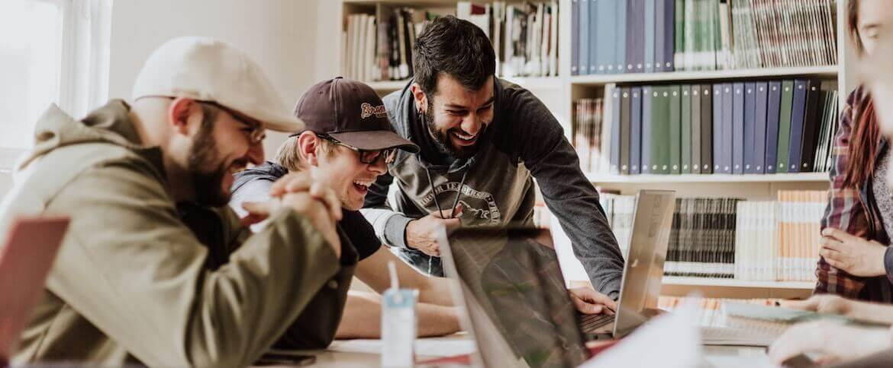
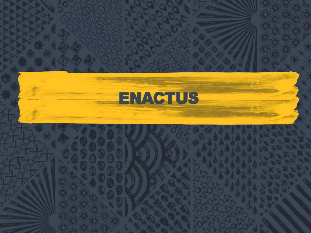
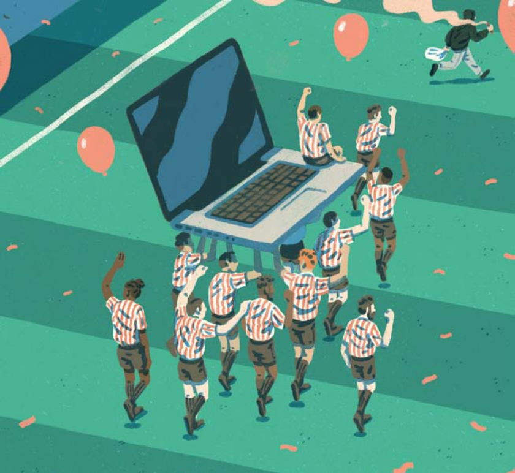
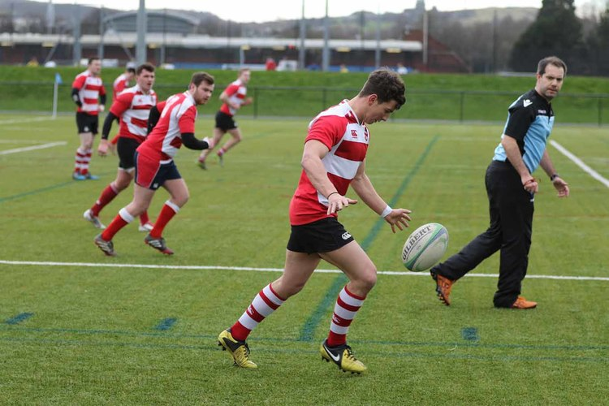
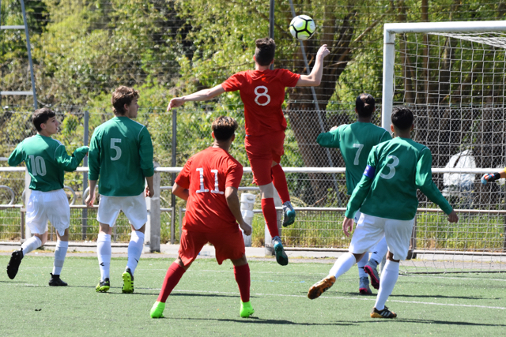
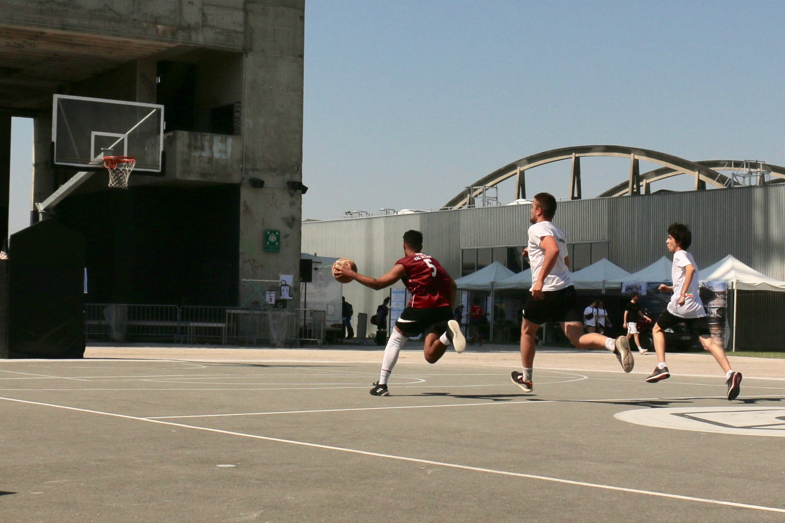

DATA LIVES IN US LA GRANDE ECOLE DE LA DATA SCIENCE
About Data Club
DATA Club brings in speakers from industry and academia, hosts workshops,
data challenges, and provides project opportunities for students
to pursue their interests in leveraging data.
Et à part les études le parascolaire est trés important pour les étudiants
non pas dans leur cursus universitaire mais aussi professionnelle et on essaye toujours de
rester sur la route des Data .

Enactus :
Enactus est une ONG internationale qui oeuvre dans le domaine de l’entrepreneuriat social estudiantin et le développement durable. Elle a été créée en 1975, et basée à Missouri – USA .
Enactus développe des partenariats entre le monde des affaires et celui de l‘enseignement supérieur afin de préparer les étudiants à contribuer substantiellement au développement de leur pays en tant que futurs leaders entrepreneurs, éthiques et socialement responsables.
La création d’Enactus au Maroc s’est faite en 2003 à l’initiative de M. Adnane Raiss, et depuis, a accompagné plus de 20 000 étudiants à s’auto-développer tout en mettant en place annuellement une moyenne de 200 projets de développement durable.
Notre vrai but est Un monde où les jeunes, les leaders du monde académique et économiques s’engagent dans l’action entrepreneuriale pour favoriser le progrès sociétal et façonner un monde meilleur et durable.
Ainsi Accompagner les étudiants dans la mise en œuvre de leurs projets d’entrepreneuriat social, à travers des événements, des formations et des concours nationaux et internationaux.

Club sportif

Le Club Sportif , est un club créé par des élèves ingénieurs de l’Ecole Nationale Supérieure AAM qui assure la pratique du sport et organise plusieurs activités physiques et sportives facultatives pour tous les étudiants du cycle normal.
Ce club met tout en œuvre pour satisfaire l’ensemble des étudiants ; aussi bien ceux qui désirent pratiquer leur passion, que ceux qui désirent se maintenir en forme uniquement.
Notre mission est simple : favoriser la pratique du sport en tant que loisir irremplaçable, découvrir de nouveaux sports jusque là méconnus, voire inédits, accroître la compétition entre les étudiants d’un point de vue sportif, et relever le niveau du sport universitaire et lui donner un nouvel envol.
Nos sports
Rugby

On a pu gagné le titre de la Botola pro des écoles informatique et aussi on est élu meilleur équipe de rugby au niveau national .
football

Notre école s'interesse aussi au football qui est le sport le plus populaire dans la nouvelle génération.
Basketball

Vous pouvez béneficier Du Basketball aussi .
Club Info
Le club informatique de FORMATION est un rassemblement hebdomadaire de personnes de tous niveaux de connaissances qui veulent apprendre, partager leurs intérêts et leurs découvertes pour tout ce qui touche aux appareils domestiques intelligents qui meublent notre quotidien, tels les PC, les tablettes, les cellulaires, le web, et toute autre technologie émergente.
Lors de ces rencontres et conférences, les participants discutent des nouveautés technologiques, partagent entre eux leurs découvertes, offrent information et assistance aux collègues, le tout dans un esprit de curiosité et d'entraide.
Au club informatique de FORMATIO, on parle PC, tablettes et mobiles (téléphones intelligents), ainsi que de tous les autres appareils qui leur sont reliés, comme les routeurs, imprimantes, etc. Naturellement, on cause aussi de systèmes d’exploitation, de logiciels et d’applications qu’utilisent ces appareils. Enfin, on s’intéresse aussi aux trouvailles dénichées sur le web.